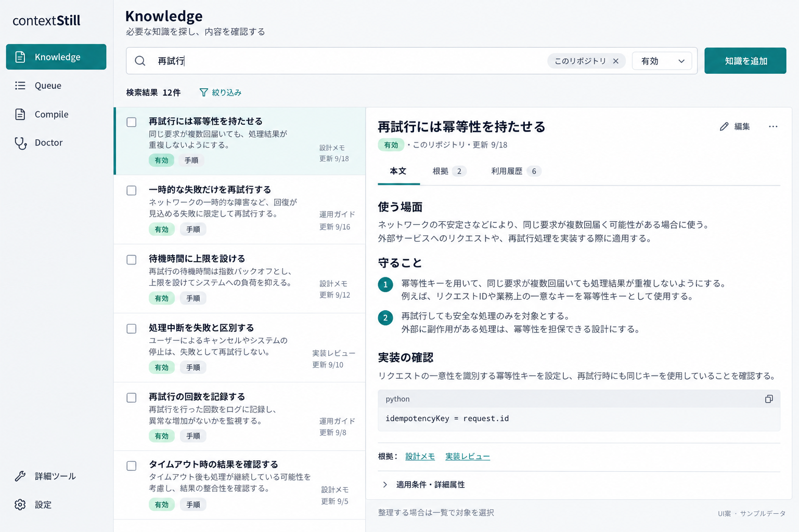
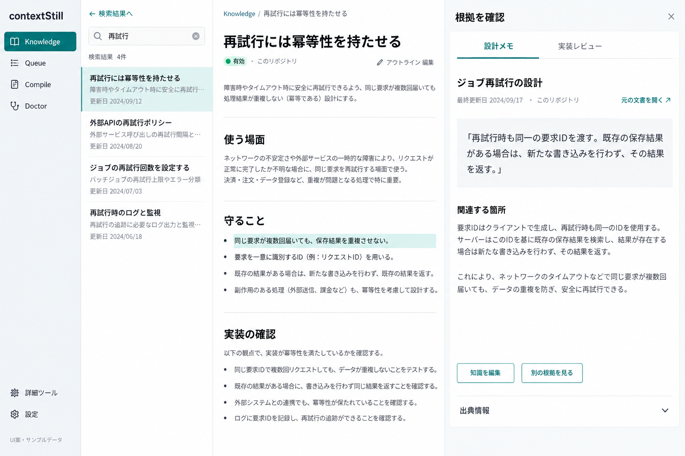
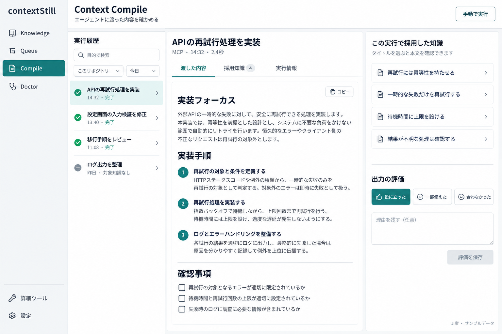
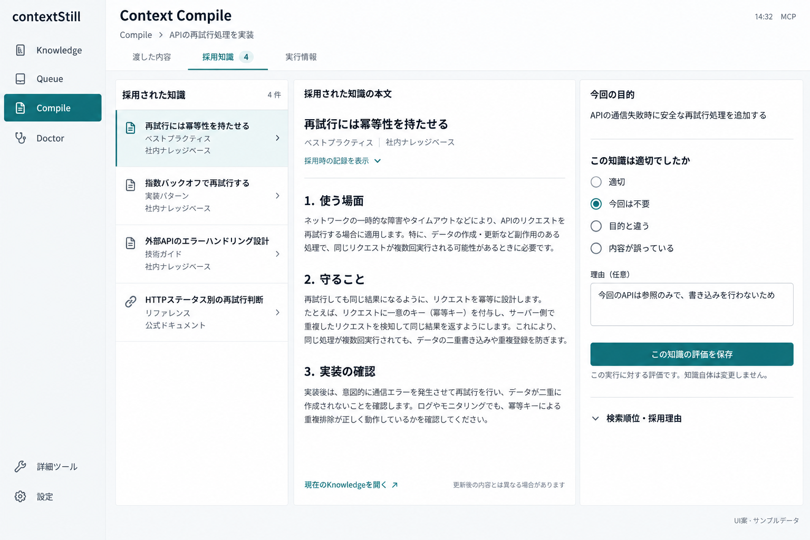
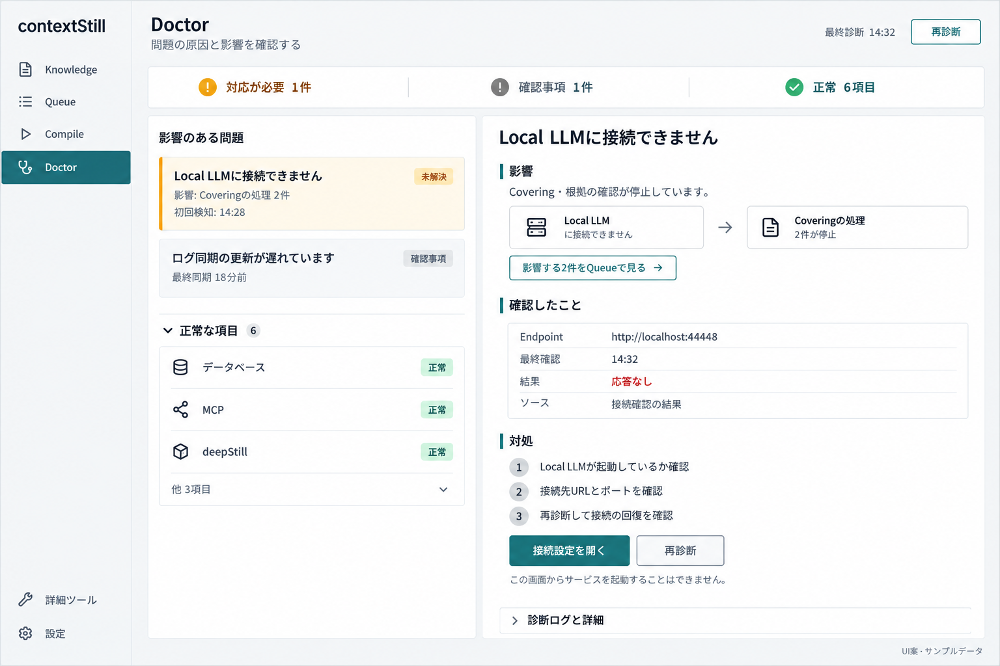
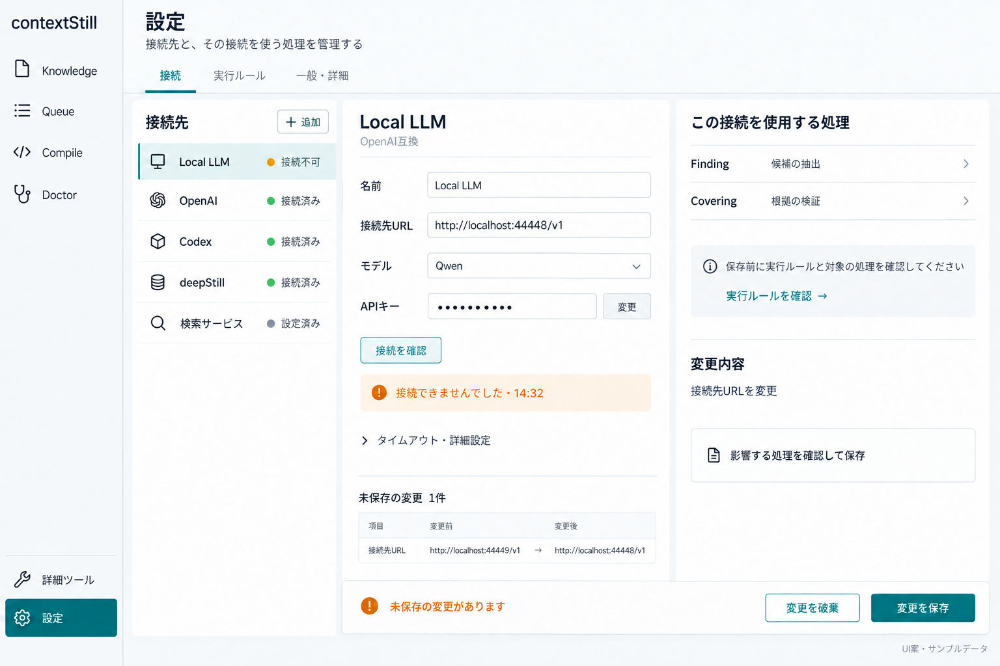

2026年9月21日作成。主要4画面と詳細2状態の計6枚。これらを含むUI画像案はすべてユーザーに不採用とされた。検討履歴として保存し、実装方針には使用しない。製品コードは変更していない。
各案は、画面の見た目よりも、目的の達成までに必要な操作・読み比べ・往復を減らすことを狙う。改善が必要な画面だけを選び、全画面の一括刷新を前提にしない。
画像は内蔵image_genで生成した。内容・件数・日時・接続状態は架空のサンプル。生成画像の細かな文言・アイコン・選択状態は確定仕様ではない。全生成プロンプトと設定画面の修正プロンプトを保存した。
一覧から本文を直接読み、必要な知識か判断してから編集に進む。
現行は本文を開く操作が編集フォームにつながる。新案では検索結果と本文を同時表示し、編集は別操作にする。本文の定型見出しは例であり、既存本文を勝手に書き換える意味ではない。

知識本文と出典を横に置き、別画面を往復せず修正の必要性を判断する。
出典を別画面で探す操作を減らす。出典本文の取得と引用箇所の対応づけが必要。取得できない出典は不明と示し、生成文で根拠を補わない。

履歴を開くと出力が読め、採用知識の情報も同じ場所で確認できる。
現行の手動実行フォーム中心の初期表示を、履歴と出力に置き換える。出力の評価と個別知識の評価を区別する。検索条件、実行単位評価の保存契約、未選択・保存済み表示は実装時に確認する。

出力と採用知識の原文を照合し、評価する対象を間違えずに記録できる。
評価対象の知識、今回の目的、評価操作を横に並べる。採用時の本文を表示するには当時の記録を取得できることが条件。現在の本文しか取得できない場合は、その事実を明示する。知識の評価は廃止操作と分ける。

同じ原因による停止をまとめ、影響と対処先を一度で把握する。
接続不調と影響するジョブを結び付ける。障害の集約、影響ジョブの関連づけ、設定への遷移には追加仕様が必要。推定した関連を確定原因として表示しない。deepStillの正常表示は架空の状態例である。

接続先と利用している処理を横並びにし、影響範囲を見てから保存する。
すべての接続フォームを縦に並べる構成から、選択した接続とその利用先の確認へ変える。Poolやfallbackを経由する間接利用も含めた利用先の算出、未保存設定への接続確認方法、設定反映のタイミングは契約を確認する。deepStillはLLM providerと同じ設定項目ではなく、接続種別に合うフォームへ切り替える。

Knowledgeは閲覧と編集の分離、設定は変更対象と影響先の確認が、比較的明確な操作改善になる。Doctorは原因・影響データの整備と合わせて判断する。Compileは既存の履歴・評価機能を活かし、確認頻度に応じて初期表示と評価導線の変更範囲を絞る。
{kind=link}
{kind=link}
{kind=link}
{kind=link}
{kind=link}
{kind=link}
{kind=link}
{kind=link}
{kind=link}
{kind=link}
{kind=link}
{kind=link}